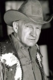

Country:United States, 93 minutes
Spoken languages:English
Genres:Sci-Fi, Horror
Director(s):William Malone
Writer(s):William Malone
Video Codec:Unknown
Number: 2896


Certification:R
Storyline:
A series of hideous murders is taking place, and Inspector Capell and cop-turned-novelist Lonergan are investigating. The murders are found to be the work of an out-of-control experiment in genetic engineering. The two men must descend into the city's sewer systems to destroy the horrific miscreation. It won't be hard to find, as it's already looking for its next victims...
Cast: 

Medium: Bluray,
Loaned: No
Aspect ratio: Unknown